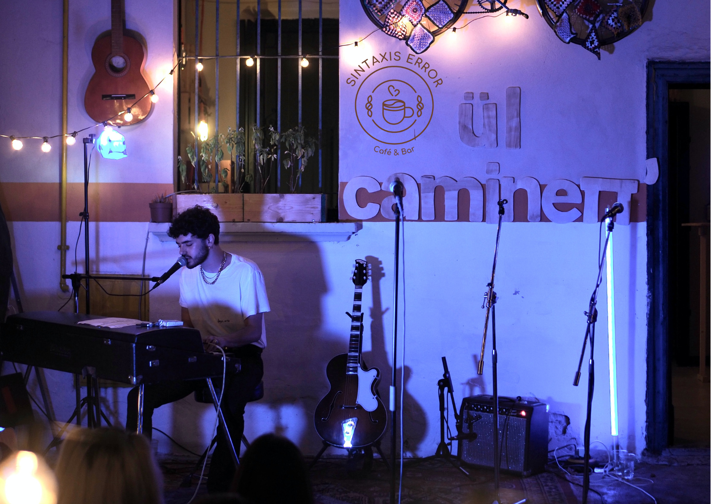

Aprender de los expertos con las mejores show en vivo y consejos
Nuestro Blog

El café y la música la adicción perfecta
Escuchar música se hizo mucho más fácil en los últimos 10-20 años, primero vinieron los CDs, luego mp3s y, finalmente, con todos los servicios de streaming como Spotify, Last.fm o SoundCloud … La música se convirtió en una fuente fácil y siempre accesible de entretenimiento rápido.
Ya lo hemos comprobado, los beneficios del café no tienen límites y sus bondades nunca dejarán de sorprendernos. Y es que, esta bebida es tan maravillosa que no solo nos ayuda a prevenir la aparición de enfermedades, a tener más energía y a vernos más jóvenes…
Conoce los mejores licores con café para sorprender
Ya sea fría o caliente, nada como una bebida con alcohol y café para disfrutar. Compartimos las mejores. Existen algunos licores con café que son ideales para pasar los días fríos de invierno. Estas bebidas cuya tradición proviene de España...